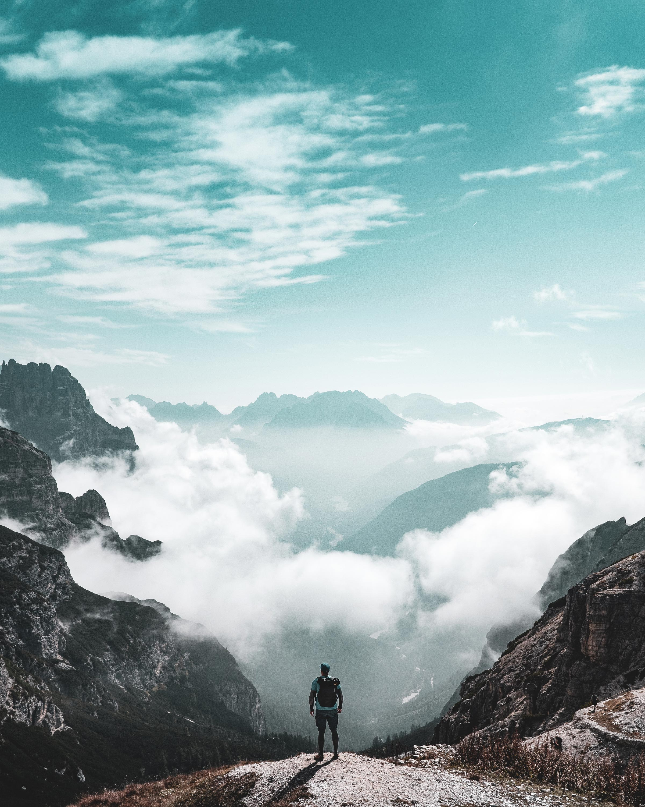

Welcome to
Folklands Ramblers
We are based in Scotland, South Ayrshire, 20 miles from Glasgow.
We would be delighted to welcome new walkers who may be considering joining us, so come on, contact us today!


Sign up to our newsletter, as we usaully send updates on a Wednesday evening.